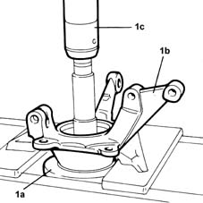
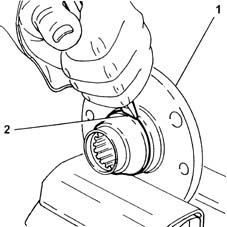
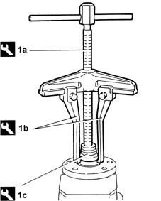
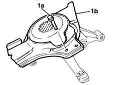
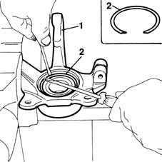
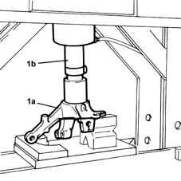

4450C34 bearing of one front wheel hub, l/h or r/h - replace with pillar removed
- Path
- Procedures > 44 SUSPENSION AND WHEELS > 4450 WHEELS AND HUBS > 4450C front wheel hubs > 4450C34 bearing of one front wheel hub, l/h or r/h - replace with pillar removed
- Kind
- repair procedure (removal / refitting; the operation number is the code)
- Applies to
- all engines; all production periods
- Interactive page
- https://sloeber94.github.io/elrnDB-fMltpl/en/#/2891749
Applies to: all engines; all production periods
 Removing
Removing
1. Remove the front hub (1a) from the steering knuckle (1b) using a press (1c).

Applies to: all engines; all production periods
1. Position the front wheel hub in a vice.
2. Move the bearing inner race away from the hub, using a chisel, to allow the extractor arms to be fitted.

Applies to: all engines; all production periods
1. Remove the front hub bearing inner race using the tool (1a) fitted with components (1b) and (1c).
 | Name | Country |
|---|---|---|
1a | Extractor | 1.840.005.003 |
| Name | Country |
|---|---|---|
1b | Extractor Arms | 1.840.005.302 |
| Name | Country |
|---|---|---|
1c | Pad | 1.845.028.000 |

Applies to: all engines; all production periods
1. Undo the bolt (1a) fixing the dust shield (1b) from the front hub steering knuckle.

Applies to: all engines; all production periods
1. Place the front hub in a vice.
2. Remove the front hub bearing circlip.

Applies to: all engines; all production periods
1. Remove the front hub bearing from the steering knuckle (1a) using a press (1b).
